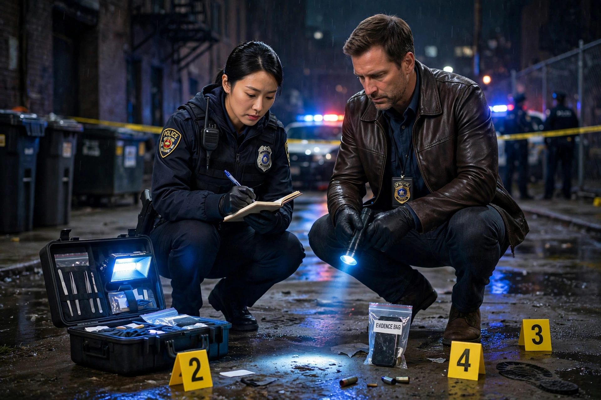

The police procedural, or police crime drama, is a subgenre of procedural drama and detective fiction emphasising the investigative procedure of police officers as the protagonist(s), as contrasted with other genres focusing on private investigators.
| Police procedural | |
|---|---|
 | |
| Genre | Crime, detective fiction |
Roots include Lawrence Treat's V as in Victim (1945) and Ed McBain's 87th Precinct novels. Television exemplars include Dragnet, Hill Street Blues, Law & Order, CSI and Nordic noir series.
Realistic depiction of forensics, interrogation, paperwork and teamwork; ensemble casts; multiple cases; emphasis on procedure over whodunit puzzle. See Plot device.